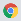
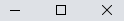
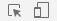
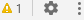
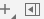

<ion-header mode="ios" class="what-i-do-header">
  <ion-toolbar mode="ios" class="flex-toolbar">
    <div class="toolbar-container space-between">
      <ul class="devtools-title">
        <li></li>
        <li><p>DevTools - baptistella.dev.br/what-i-do</p></li>
      </ul>

      
    </div>
  </ion-toolbar>
  <ion-toolbar mode="ios" class="flex-toolbar">
    <div class="toolbar-container">
      <ul class="devtools-icons">
        <li></li>
      </ul>
  
      <ul class="devtools-tabs">
        <li class="active">Elements</li>
        <li>Console</li>
        <li>Lighthouse</li>
        <li>Sources</li>
        <li>Network</li>
      </ul>

      <ul class="devtools-icons right">
        <li></li>
      </ul>
    </div>
  </ion-toolbar>
</ion-header>

<ion-content>
  <section class="what-i-do console-style">
    <ion-grid class="ion-no-padding">
      <ion-row class="ion-no-padding">
        <ion-col size="8">
          <div class="html-code">
            <ion-content>
              <div class="html-code-tags console-style">
                <code-html></code-html>
              </div>
            </ion-content>

            <ion-footer mode="ios" class="what-i-do-footer">
              <ion-toolbar mode="ios">
                <pre>
<span class="tag-purple">html</span>  <span class="tag-purple">body</span>  <span class="tag-purple">section</span><span class="tag-orange">.button</span>  <span class="tag-purple">button</span><span class="tag-orange">.red-btn.what-i-do-btn</span>
                </pre>
              </ion-toolbar>
            </ion-footer>
          </div>
        </ion-col>

        <ion-col size="4">
          <div class="css-code">
            <ion-header mode="ios">
              <ion-toolbar mode="ios" class="flex-toolbar">
                <div class="toolbar-container">
                  <ul class="devtools-tabs">
                    <li class="active">Styles</li>
                    <li>Computed</li>
                    <li>Event Listeners</li>
                    <li>DOM Breakpoints</li>
                    <li>Properties</li>
                    <li>Acessibility</li>
                  </ul>
                </div>
              </ion-toolbar>

              <ion-toolbar mode="ios" class="flex-toolbar">
                <div class="toolbar-container">
                  <input type="text" readonly placeholder="Filter">

                  <ul class="devtools-tabs highlighted">
                    <li>:hov</li>
                    <li>.cls</li>
                  </ul>

                  
                </div>
              </ion-toolbar>
            </ion-header>

            <ion-content>
              <div class="style-properties">
                <span>element.style &#123;</span>
                <span class="flex"><input type="checkbox" [attr.checked]="selectColor" (change)="selectColor = !selectColor"> <span class="property-orange mg-left-5">background:</span> var(--theme-color);</span>
                <span>&#125;</span>
              </div>
            </ion-content>
          </div>
        </ion-col>
      </ion-row>
    </ion-grid>
  </section>

  <section class="button">
    <ion-button [class.default]="selectColor" moda="ios" fill="solid" size="default" button-type="button" routerLink="/gaming" routerDirection="forward">Conheça meu trabalho <ion-icon class="mg-left-5" name="arrow-forward-outline"></ion-icon></ion-button>
  </section>
</ion-content>
